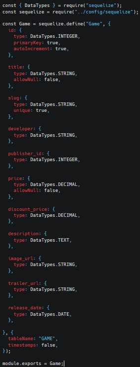
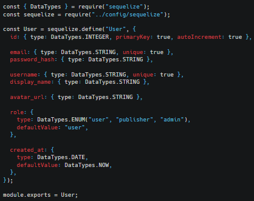
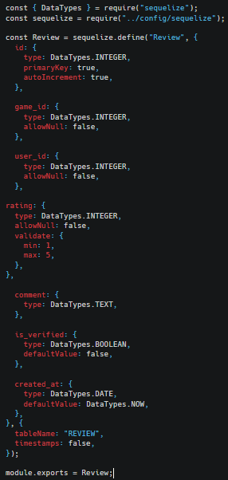
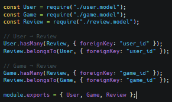
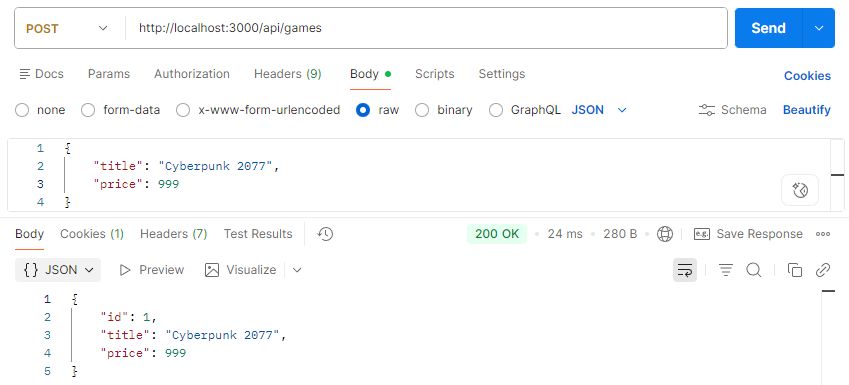
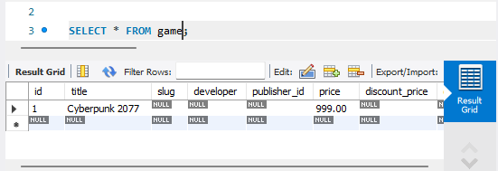
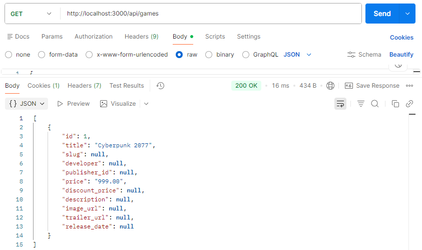

Створення моделей та встановлення їх звязків
models\game.model.js
Зображення

models\user.model.js
Зображення

models\review.model.js
Зображення

models\index.js(встановлення звязків)
Зображення

Архітектура обробки запитів Client (Postman) ↓ Routes ↓ Controller (async функції) ↓ Sequelize (ORM) ↓ MySQL
За допомогою Використання ORM Sequelize SQL запитів з Node.js (SELECT, INSERT) ми подивились запис таблиць, додали запис за певними умовами
Запит SQL INSERT(Sequelize create), Postman POST + перегляд у mySQL
Зображення


Запит SQL SELECT(Sequelize findall), Postman GET
Зображення
